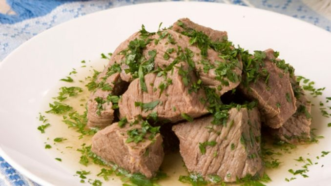

Khashlama Recipe

What is Khashlama
Khashlama is a boiled beef dish popular in the Kakheti region of Georgia and usually always part of a Kakhetian supra (feast). In the eastern mountain regions of Georgia (e.g. Tusheti) Khashlama is made with lamb.
It is simple dish to make but does take several hours to cook.
Ingredients
- Beef - 1 kg
- Bay leaves - 3 pieces
- Black peppercorns - 6 pieces
- Large white onion - 1 piece
- Garlic - 2 pieces
- Parcley -30 gr
Steps for preparation
- Wash and cut the beef into medium-large chunks. Add to a deep pot of hot water, cover and bring to the boil. Pour out the water.
- Add fresh water and an onion that has been cut into two pieces. Do not add salt at this stage. Bring to the boil and remove any foam from the top of the water. Partly cover and simmer for 1 hour.
- After one hour, add the bay leaves, garlic and black peppercorns.
- Allow to simmer (partly covered) for a further 2 hours.
- Form a ball from the dough.
- Garnish with coarse salt and parsley and serve hot. The meat juices left in the pot can be made into a delicious soup.